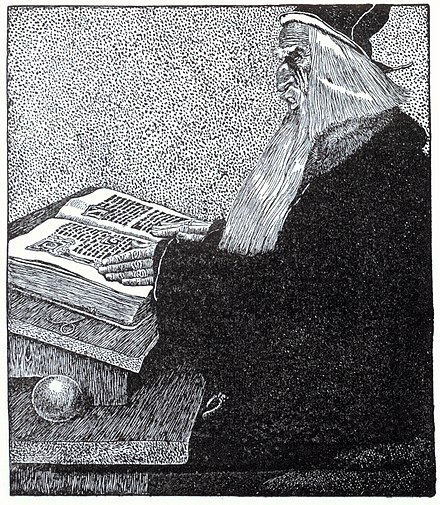

Legend

ประวัติของพ่อมดเมอร์ลินมีเค้าโครงบางอย่างที่พอจะยืนยันได้ว่ามีตัวตนอยู่จริง ตำนานมหัศจรรย์เกี่ยวกับพ่อมดเมอร์ลินมีอยู่มากมายเล่ากันว่า เขาคือผู้จัดเรียงก้อนหินมหึมาที่สโตนเฮนจ์ เพื่อเป็นที่ระลึกแก่เหล่าทหารของกษัตริย์อาร์เทอร์ บ้างก็ว่าเมอร์ลินสามารถหยั่งรู้อนาคตได้อย่างชัดแจ้ง เนื่องจากเขาเป็นผู้ที่มีชีวิตย้อนหลัง กล่าวคือคนทั่วไปจะใช้ชีวิตจากอดีตไปสู่อนาคต แต่เมอร์ลินจะใช้ชีวิตจากอนาคตย้อนมาสู่อดีต เมื่อเขาเคยผ่านอนาคตมาก่อนแล้ว จึงทำให้ทราบเรื่องราวที่จะเกิดขึ้นต่อไป